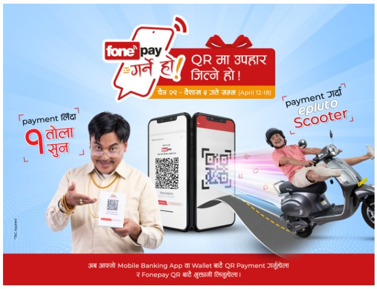
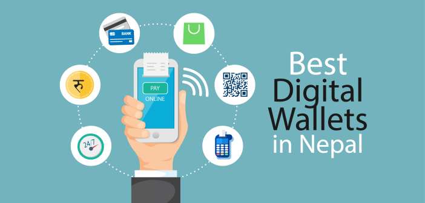
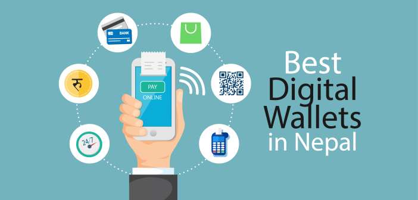
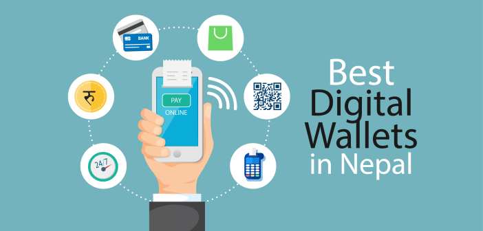

ネパールのキャッシュレス社会への一歩：Phone Pay
ネパールの「Phone Pay」は、デジタル決済を簡単・安全に行うためのモバイルアプリとして急速に普及しています。 これにより、人々は銀行口座やATMに行かなくても、スマートフォンだけで送金、支払い、公共料金の支払いなどを行うことができます。 特に地方でも使いやすい設計となっており、ネパール全土での金融包摂を推進する重要な役割を果たしています。
Phone Payは、ネパールの中央銀行（Nepal Rastra Bank）によって認可されており、ユーザーの情報や取引データは高度に暗号化されています。 また、QRコード決済の導入によって、カフェ、レストラン、小規模店舗などでも簡単に支払いが可能になりました。 このように、Phone Payは日常生活のあらゆる場面で「キャッシュレス革命」を実現しつつあります。
さらに、ネパール政府はデジタル経済の発展を促進するため、テクノロジー教育や電子商取引の拡大にも力を入れています。 その中でPhone Payは、国民がデジタル社会へ移行するための「架け橋」として注目を集めています。 未来のネパールでは、現金を使わず、スマートフォンひとつであらゆる取引が完了する社会が現実になるでしょう。

 

